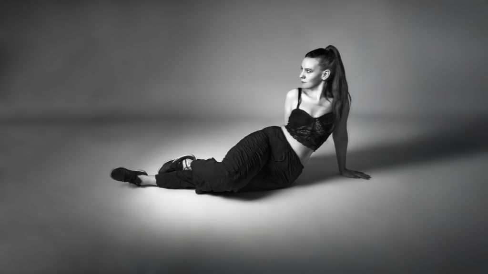

Three Ways To Say It Out Loud: Vulnerability, Volume, And Self-Made Vision

The following features are now included in our online magazine which is also available in print.
Issue #9
Online Magazine | Print MagazineFreya Magee Finds Wit and Wound in Indie Songs That Linger After Midnight
The songs that Freya Magee writes are the kind that resemble scribbles on paper written in the dead of the night, sharp and witty and a little hurt and tender around the edges. She is a London-based artist, but she carries the whispers and shadows of her upbringing in Melbourne with most charming effect, as if she writes with a certain hesitance that translates beautifully into melody, accompanied by a softly understated percussion and lo-fi sounds that do not overpower the words themselves. She fits right in with other songwriters like Phoebe Bridgers and early Mitski, but the wit with which she expresses herself is uniquely hers.
Her first singles announced a pattern. "Duplicity" kept self-doubt at a steady, passionate simmer, while "Forget Yourself Not" introduced a snappier, anxious energy. The latest, "Over There," moves again, this time incorporating a heavier, fuller-band sound, redolent of mid-2000s romantic comedies and alt-pop soundtracks. It launches aggressively, almost proudly, only to allow uncertainty to creep into the spaces. It's this push-and-pull where Magee finds her strongest voice.
The music remains quite subdued and thoughtful, and the emotional resonance comes from minute shifts in temperament. Anyone familiar with groups like Soccer Mommy, Alvvays, or the more subdued sections of Maggie Rogers’ earlier releases will have no shortage of things to relive and appreciate here. Magee is the type of songwriter whose first EP might autoplay on return to your apartment, on that late-night walk home and into the quietening sounds of your mind.
VERSAINTS’s Bottle Chaos and Sweat on a Live Album That Refuses To Behave
VERSAINTS are a band that seems to want to shake the walls more than sweep them tidy. There is a first-ever Brighton performance EP entitled Bloody Raw, and it is exactly what it says on the tin. Boisterous and loud and vibrating with a tense energy from a band feeding off a crowd for the very first time. The West Midlands trio take inspiration from 90s grunge and British post-punk bands with riffages that scrape and drummers trying to outrun the music.
The love for Nirvana, The Clash, and Pixies is evident in the rush from melodic moments to noise, but VERSAINTS remain earthy and tangible. The recording is not polished when it comes to the missed notes and blown-out amplifiers, and this is the brilliance about it. You are hearing the space where the band is pushing it until everything comes crashing down.
From their debut album SOS, it is clear they have the capability to pen tracks that truly kick, mixing emotions that come from the gut with hooks that linger. Bloody Raw simply illustrates that this music is even better when it is on the verge of boiling over. So, if what you enjoy is the raw, sweaty passion that can be gleaned from IDLES live performances, or the initial hype surrounding bands such as Shame, then this EP is a reinforcement that loud, fuzzy rock music is still relevant.
Alexis Lace - Turns Reflection into Pop Soul on 'Tequila Sunrise'
It seems that Alexis Lace learned to build a musical foundation from the grassroots up, doing everything in house, and this is reflected in Tequila Sunrise. It is a track which launches a fresh chapter from her album Silver, mixing catchy pop elements with trip-hop darkness and good old-fashioned R&B warmth. While there is a nod to All Saints and Massive Attack in terms of atmosphere, Lace maintains all attention with her vocals, which possess both power and subtlety.
Tequila Sunrise is an album that reflects rebirth and the process of letting go of the weight that no longer serves a purpose in life. It is a refreshing sound that Lace uses effectively in this recording by allowing the lyrics to ride on a strong beat and solid layers in the background with a raw intimacy and confidence that does not rush to get to the point that has to be made. One thing that is most apparent is that it all feels so natural and organic. Lace is not following any trends or attempting to showcase her range. She lets this song ride at its own tempo, layering her emotion in tone as opposed to intensity. Fans of acts such as Jessie Ware, or even the softer sides of Alicia Keys or FKA twigs, will recognize elements in this song that feel both familiar and very intimate. This has a chance at being a record for late nights and quiet drives, something to be listened to while watching a reflection-filled film or a dramatic move. Tequila Sunrise points towards Lace finding a confident note about delivering pop music, one that prioritizes emotion over effect.
This dispatch was last updated on December 28, 2025